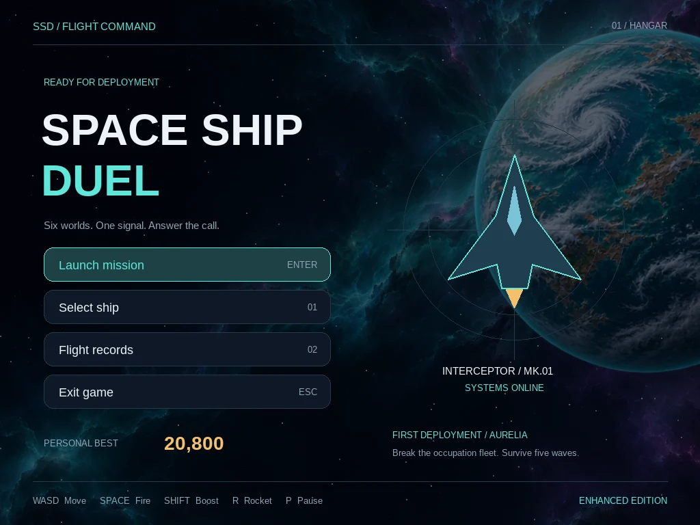

Independent project / Game design & development
One pilot. Six worlds.
A reason to keep flying.
Space Ship Duel is a desktop arcade space shooter built with Python and Pygame CE. I developed the combat systems and shaped the player experience, from the first distress signal to the next orbital encounter.

The design challenge
A wave shooter needs more than enemies to clear. The controls must feel immediate, danger must be readable, and the player needs a reason to move from one encounter to the next.
I approached this through two connected layers: clear combat feedback and a frontier journey that gives each five-wave sector a destination.
The core loop
Choose a ship and difficulty → enter orbit → survive enemy waves and debris → improve weapons and manage shields and boost → defeat the sector command ship → recover and approach the next world.
Five waves form a sector. Six distinct worlds create the route; the original endless arcade challenge continues at Nova-7 after wave 30.
Make the first minute an invitation
The opening moves from an intercepted distress signal to a six-world route, a short jump and the approach to Aurelia. It lasts 13 seconds, can be skipped, and reaches the hangar automatically. Before combat, a brief arrival screen introduces the destination, objective and essential controls.


Build readable combat systems
Enemy formations enter in stages and occupy separated flight lanes. Shields, boost, weapon progression and a later rocket unlock give the player choices beyond movement and firing. Asteroid and comet storms telegraph danger lanes while leaving an escape corridor.
Banking ships, plasma engines, projectile trails and impact effects communicate motion and damage. The orbital art is darkened during play so it supports the action without competing with the ships and weapons.
Let the worlds carry the story
Aurelia’s teal seas, Khepri’s desert canyons, Vantor’s violet fractures, Orison’s ice, Helios’s volcanic surface and Nova-7’s emerald terrain give the journey a consistent visual vocabulary. The same worlds appear in the prologue, mission briefings, live backgrounds and progress rail.


Planet and nebula artwork was created with AI-assisted generation, then prepared and integrated as cached Pygame assets. The screenshots above are actual game renders. Interfaces, ships and combat effects are drawn by the game.
Engineering behind the experience
Time-based animation and bounded image caches support the visual presentation. Seventeen automated tests cover combat spacing, projectile behavior, debris damage, cinematic completion, briefing input and the gameplay loop progressing through all six worlds. Reproducible render captures make visual changes reviewable.
What I would develop next
Distinct enemy behaviors for each world, stronger boss attack cues, contextual first-flight teaching, and player settings for controls, audio, shake and flashes. These would make the visual journey more meaningful as a tactical experience.